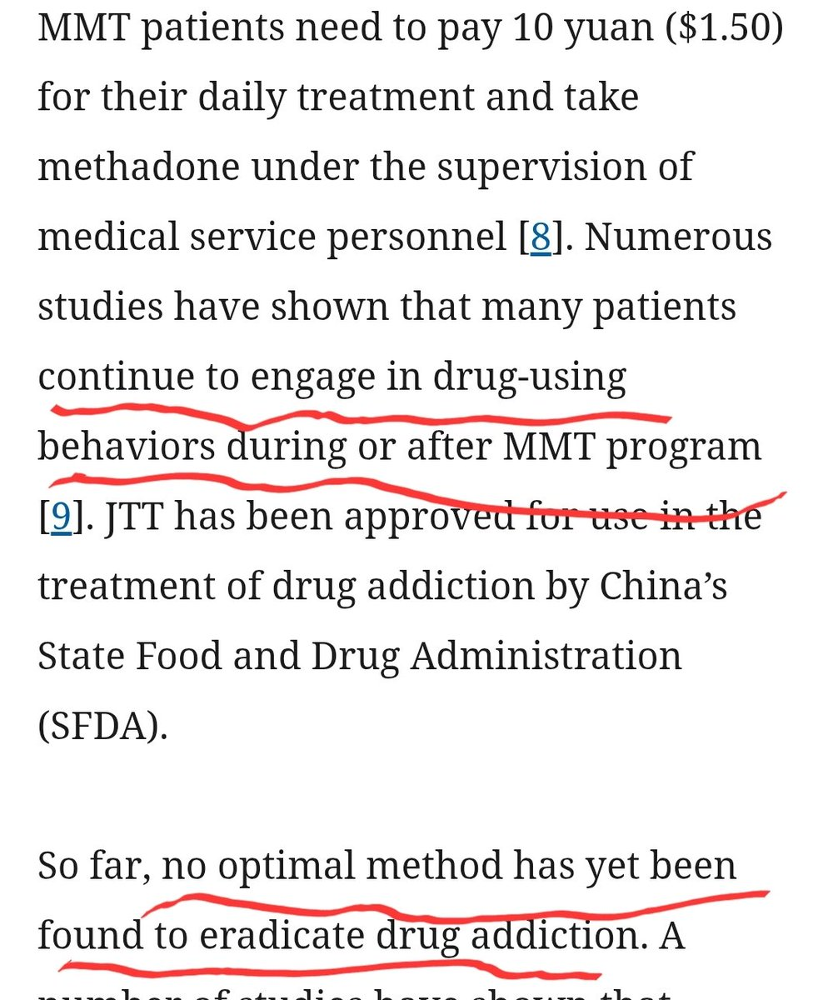

确实是无解，逐渐恢复属于极个别个案，一旦到了强阿片依赖就是“事实无解”的，具体情况参考阿片类药物滥用导致的脑部稳态重置（Allostasis）现象，以及NAc中的异常蛋白质堆积现象，以及这种现象积累的异常蛋白目前无法确定其半衰期，但是可以证明的是“极长，甚至可以说是永久性的”例子是很多报告中许多重度阿片成瘾者已经在诊断上表明“已戒断”而且是在戒断多年后再次“偶然”有机会获得或者接触强阿片类物质后依然会出现用药强迫现象，表现出非自主的强烈的复吸冲动或者直接开始失控复吸的现象。以及https://t.co/XFzcKw1YHv
这个直接调查结果都可以作为“无解”这个答案的有力证据。
这个直接调查结果都可以作为“无解”这个答案的有力证据。
